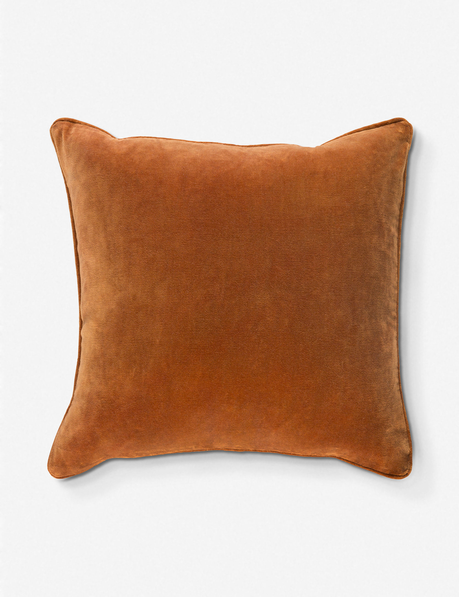
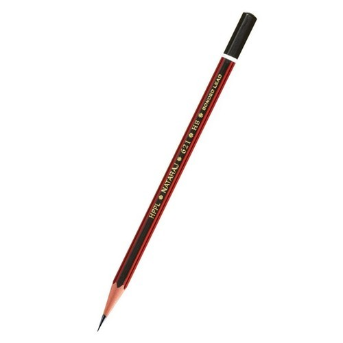

Case Study
1. Test Image
Output on Wolfram Project -
Water Bottle
Output on MobileNet Model -
Home Theater
Mini Result
Wolfram Project is more accurate.
2. Test Image
Output on Wolfram Project -
Pen
Output on MobileNet Model -
Pencil Eraser
Mini Result
Both are inaccurate.
3. Test Image

Output on Wolfram Project -
Pillow
Output on MobileNet Model -
Pillow
Mini Result
Both are accurate.
4. Test Image

Output on Wolfram Project -
Tool
Output on MobileNet Model -
Pencil
Mini Result
MobileNet Model is more accurate.
5. Test Image
Output on Wolfram Project -
Luggage and bags
Output on MobileNet Model -
Backpack
Mini Result
MobileNet Model is more accurate.
Conclusion
I have tested 5 objects.Wolfram Project has identified 2 objects and MobileNet Model has identified 3 objects.Hence,MobileNet Model is more accurate.